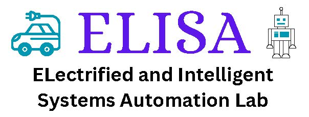
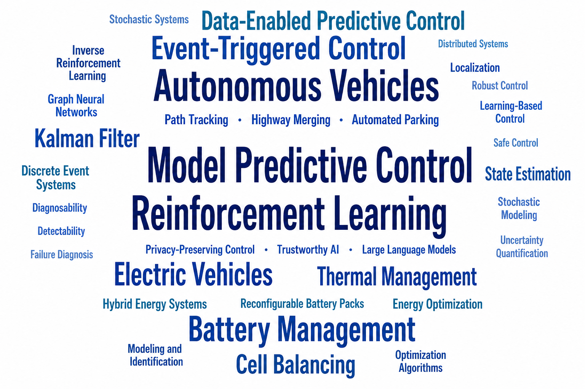
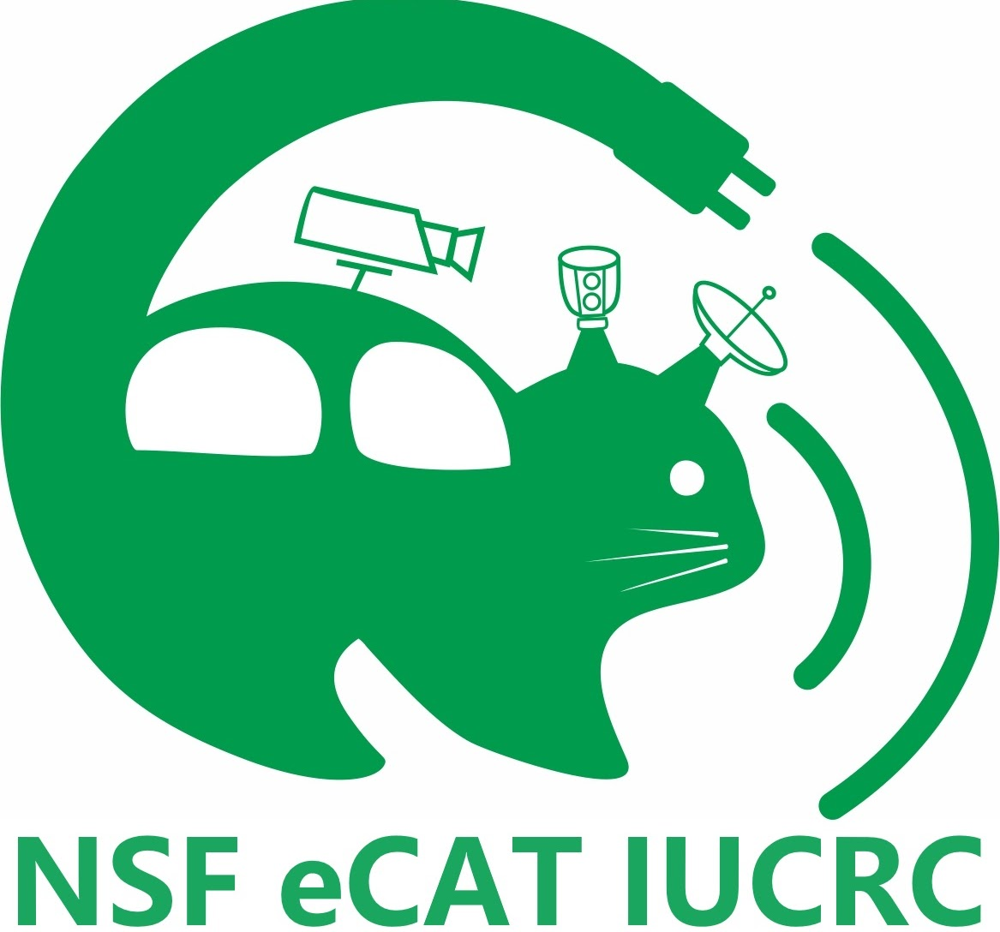

Research

ELISA: ELectrified and Intelligent Systems Automation Lab
The ELectrified and Intelligent Systems Automation Lab (ELISA) at Oakland University was established in 2020. ELISA Lab develops learning-enabled estimation and control for electrified and intelligent systems. Our guiding question is how to do more with less: fewer sensors, less communication, less computation, and less data, without giving up performance or safety guarantees. We combine control theory, optimization, formal methods, and machine learning to build scalable, verifiable algorithms for large-scale interconnected cyber-physical systems, from battery packs and power electronics to fleets of autonomous vehicles and robots.
 |
Research Areas
Physical AI & Verifiable Autonomy: Learning where it helps, guarantees where they matter.
Learning-enabled estimation and control
Formal methods and discrete event systems
Safe decision making for autonomous systems
Multi-robot coordination
Estimation & Control of Interconnected Systems: Scalable theory for systems with many coupled parts.
Distributed and decentralized state estimation
Sensor-lean estimation
Model predictive and event-triggered control
Large-scale numerical optimization
Electrified & Intelligent Systems: Where the methods meet hardware.
EV battery management and second-life batteries
Power converter control and hybrid energy systems
Autonomous vehicles and ground mobile robots
Personalized mobility
Recent Talks & Presentations
Estimation and Control of Large-Scale Interconnected Systems with Automotive Applications [University of Michigan Control Seminar, September 2026, Recording]
Project Sponsors


Disclaimer: Any opinions, findings, and conclusions or recommendations expressed in our research are those of the authors and do not necessarily reflect the views of the project sponsors.